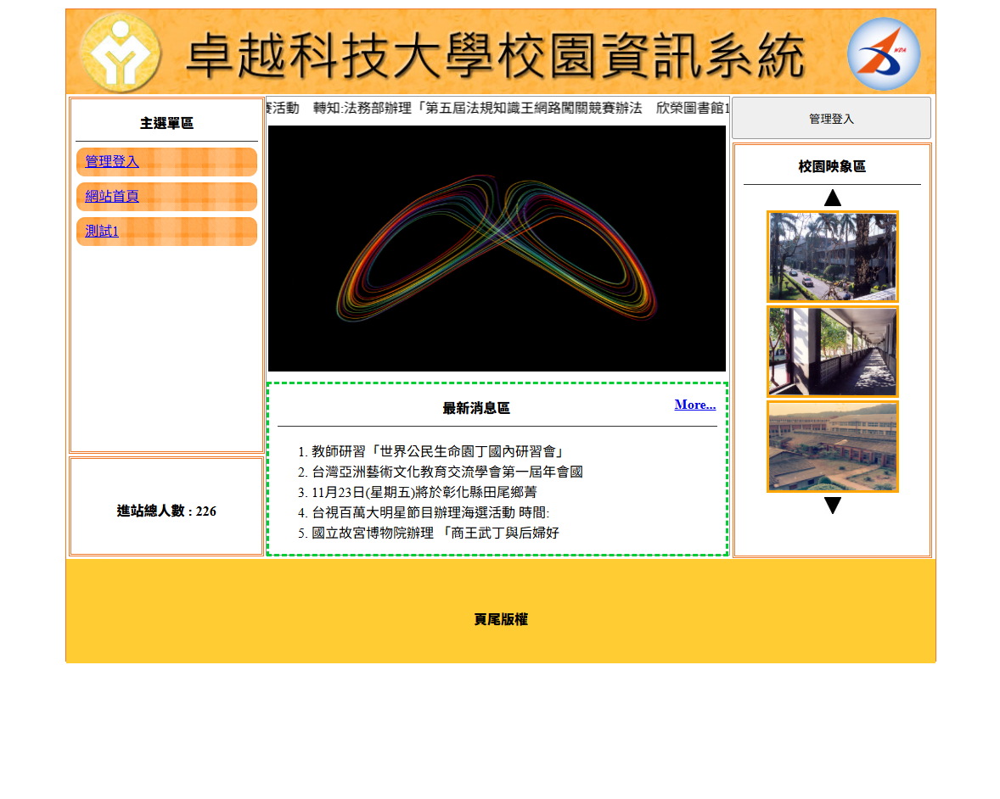

題組一：卓越科技大學校園資訊系統

完整的校園網站內容管理系統（CMS），包含前台多區塊動態呈現與後台 9 大模組維護功能。
- 前台互動：動態文字廣告輪播、GIF 動畫圖片切換、校園映像上下捲動控制。
- 資訊與分頁：最新消息前 5 筆展示、滑鼠移入彈出完整內容、More 更多消息分頁。
- 後台管理：網站標題單選切換、進站總人數統計（防重複刷新計算）、雙層主次選單動態管理。
PHP
MySQL
JavaScript 輪播
主次選單關聯